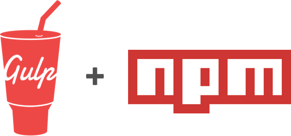

Where does someone start with icon consistency? In the beginning, we slowly replaced pngs with an iconfont generated by icomoon. With a team steadily growing and an increasing amount of icons, reliable versioning and a single source of truth are necessary constraints.
There have been three ways of using an icon in the interface before this project.
Using icomoon to perform the needed tasks caused the following problems:
The featureset of the betterSolution™:
Let me introduce you to my new friends

I used the gulp-iconfont package that does a good job with creating font files out of a bunch of svgs.
What I had to build manually was a way to take the svg names and the char codes and turn them into sass variables. Additionally to generate not one but three iconfonts out of the same svgs.
For versioning we used semver so you could safely roll back to a previous icon version if something went wrong.
Later on we automated the build and deploy process with travis. To sugarcoat the whole thing we added autoreleasing based on commit styles.
To guarantee easy access the source-code organisation was done in github. Github pages came into play for an overview.
This project was my first approach in solving things on my own with gulp. Another learning was that there is a downside when lot of people reach out to consult you. It's rewarding but has to be taken with a grain of salt. At least when there is no dedicated role for a topic, everyone should be able to do it or there will be a bottleneck. With this tool under our belt I freed myself from being the person in charge of icons and created a space for collaboration and consistency.
Check out the jimdo-icons demo